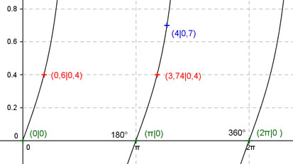

Aufgabe 157 Ergänzen Sie die Wertetabelle für x zwischen 0 und 2π: y = 0,6 tan x x 4 0,6 oder 3,74 y 0,7 0,4 Periode = π Berechnung der Nullstellen: 0,6 tan x = 0 ---> x = k * π und k = 0, 1, 2 --> x1 = 0 oder 0°, x2 = π oder 180°, x3 = 2π oder 360°.  Funktionswert an einer Stelle x ermitteln: 4 * 180° x = 4 oder ---------- = 229,2° π f(4) = 0,6 tan 4 = 0,6 tan 229,2° = 0,7 gerundet. Berechnung der x-Werte für y = f(x) = 0,4: f(x) = 0,4 eingesetzt, existiert einmal zwischen 0 und π bzw. 0° und 180° und zwischen π und 2π bzw. 180° und 360° (siehe Graph). 0,6tan x = 0,4 |:0,6 --> tan x = 0,667 --> x = arc tan 0,667 = 0,588 (0,6 gerundet) --> 0,6 * 180° x1 = 0,6 oder ------------ = 34,3° π x2 = (π + 0,6) = 3,74 oder 214,3° gerundet.